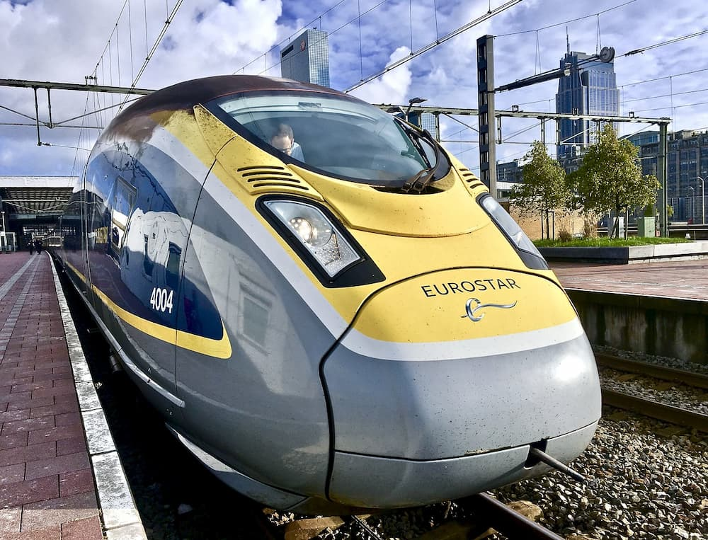
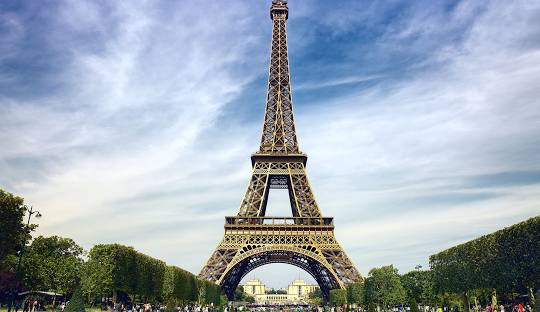
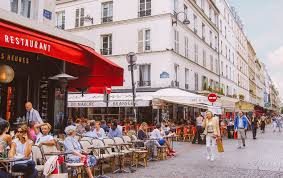
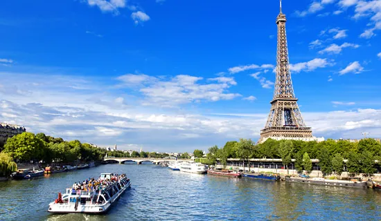

Día 4 - Mañana

Londres > Paris
Horario: 2.5 horas
Viaja de Londres a París en tren Eurostar (2.5 horas). Dedica 3-4 días para visitar los principales atractivos.
Ver en Google Maps

Torre Eiffel
Horario: (2-3 horas):
Comienza temprano para evitar largas filas. Sube hasta el segundo piso o la cima para disfrutar de vistas espectaculares.
Ver en Google MapsDía 4 - Mediodía

Almuerzo en Rue Cler
Horario: ?
Una calle cercana con bistrós y boulangeries tradicionales.
Ver en Google MapsDía 4 - Tarde
Arco del Triunfo
Horario: 1 hora
Llega al monumento usando el paso subterráneo. Sube al mirador para disfrutar de una vista panorámica de los Champs-Élysées.
Ver en Google Maps
Campos Elíseos
Horario: ?
Camina por esta famosa avenida, disfruta de tiendas, cafés y el ambiente parisino.
Ver en Google MapsDía 4 - Noche

Crucero por el Sena
Horario: ?
Cierra el día con un paseo en barco para ver los principales monumentos iluminados.
Ver en Google Maps